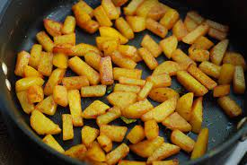

Potato Mezhukkupuratti

Description
Potato Mezhukkupuratti is a local delicacy of the state of Kerala in India. It is used commonly with rice as a side
dish and can be made pretty quickly. Housewives and bachelors alike would love this recipe as it is tasty as well as
easy to make.
Potato mezhukupuratti is a fry made with potatoes, onions,spices and a splash of oil. A wok and a spatula are the
only utenslis necessary along with a stove or induction cooker to make this dish.
Ingredients
- Potatoes(2-3 Nos)
- Onions(2-3 Nos)
- Mustard
- Red Chillies(2-3 Nos)
- Garlic
- Turmeric Powder(1/2tsp)
- Red Chilly Powder(1tsp)
- Salt(as required)
- Curry Leaves
- Oil(2 tablespoons)
Steps
- On the stove and pour 2 tablespoons of Oil in the pan and heat the oil for a while.
- After the oil is heated well, put some mustard seeds into the oil and wait for them to pop.
- Put two to three red chillies, garlic cloves and some curry leaves into the oil and stir them for a minute until
the garlic cloves turn golden-brown
- Add onions,stir the mixture and wait until they change colour.
- Add potatoes and stir the mixture well with the spatula.
- Add half a tea spoon of turmeric powder along with 1 tea spoon of red chilly powder and stir the mixture.
- After a minute, add salt to the mixture as required and stir well.
- Fry the mixture well on medium to low flame until the potatoes turn soft. Stir the mixture occassionally to
avoid potatoes sticking to the pan.
- Serve the dish along with rice or a main course